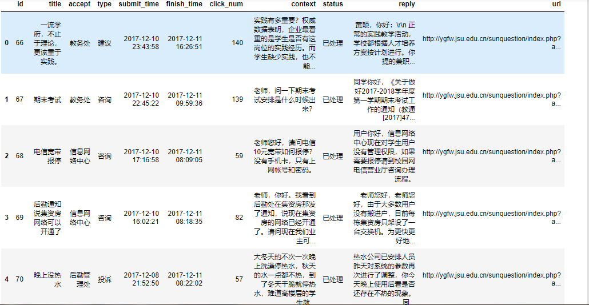
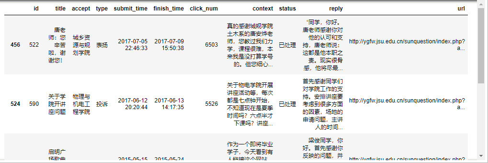
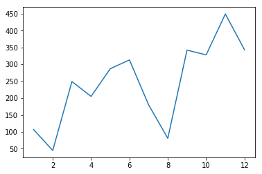
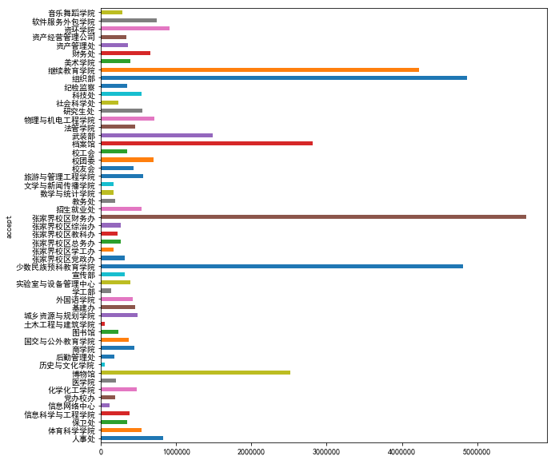
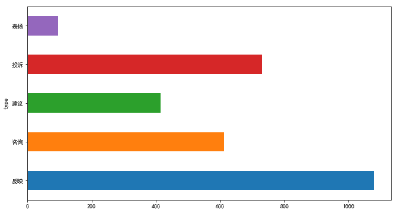

最近在家准备写毕业论文，在家里查文献的时候特别不方便，知网的文献不能下载，只能看到摘要。但是我校购买了知网数据库，使用学校ip可以直接下载知网文献，遂上阳光服务平台准备咨询是否提供vpn连接到校内网供学生查询文献。然后突发奇想，使用python编写了个爬虫把阳光服务平台数据爬下来做数据分析。爬虫部分代码就不帖出来了，让我们一起来看下数据分析。
爬虫爬取的所有数据均保存在MySQL中，首先导入必要的包。
1 | import numpy as np |
将数据从数据库导入进来。
1 | conn = pymysql.Connect(host='127.0.0.1', user='root', password='root', port=3306, db='ygfw', charset='utf8') |
让我们看下前面5条数据。
1 | df.head() |

这里对字段说明下
| 字段 | 说明 |
|---|---|
| title | 标题 |
| accept | 受理单位 |
| type | 类型 |
| submit_time | 提交时间 |
| finish_time | 回复时间 |
| click_num | 点击次数 |
| context | 内容 |
| status | 状态 |
| replay | 回复 |
| url | 原链接地址 |
首先我们看下点击率。
1 | df.set_index('submit_time')['click_num'].plot() |

点击率最高数量的在2017年8月左右达到了6000多，
让我们看下点击率第一的是哪条。
1 | (df.sort_values(by=['click_num'], ascending=False)).head() |

可以看到点记录排第一的是来自城乡资源与规划学院的一封表扬唐老师的信件，点击有6500多次。
按照月份看下从14年到17年每个月提交信件的数量
将submit_time提取出来作为一个Series的index，将Series的值设置为1作为统计计数，然后用lambda表达式按照月份统计信件和。
1 | s = pd.Series(1, index=df['submit_time']) |

可以看到在十一月份左右信件数量最多，达到了450左右，而二月份和八月份可能是由于寒暑假的原因达到了年度最低量。
1 | s.groupby(lambda x: x.year).sum().plot(kind='bar') |

由于17年还没过完，所以17年比16年要少点。按照年份来看，阳光服务平台的信件数量呈现逐年上升趋势。
1 | plt.rcParams['font.sans-serif'] = ['SimHei'] |

其中各部门中管理处的信件是最多的，可能是大多数人不知道要发往那个部门，就往管理处投吧，233333~
然后我们看下各部门对信件的处理速度吧。
我们将信件处理完成的时间减去提交时间得到的时间差转换成秒数，然后对各部门的时间差求平均，得到各部门处理每封信件的速度。
1 | df['time'] = df['finish_time'] - df['submit_time'] |

其中张家界校区财务办处理信件的速度最慢，历史与文化学院处理信件的速度最快，从上面各部门信件数量上来看历史与文化学院与张家界校区财务办信件数量上是差不多的，都比较少。
1 | plt.figure(figsize=(11, 6)) |

看下信件的类型，其中最多的是反映，第二是投诉，最少的是表扬，看样子学校做的不好的地方还是有点多啊。
好了，我们的数据分析先暂时到这。
本文首发于我在万达摆地摊's blog，转载请注明来源